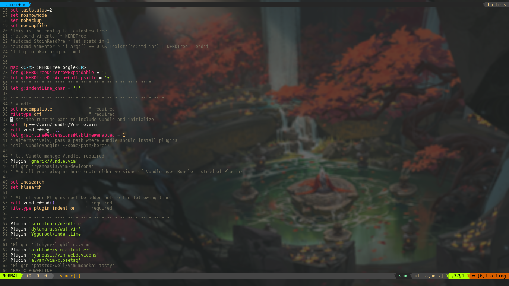
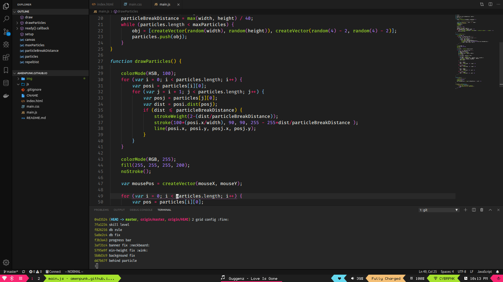
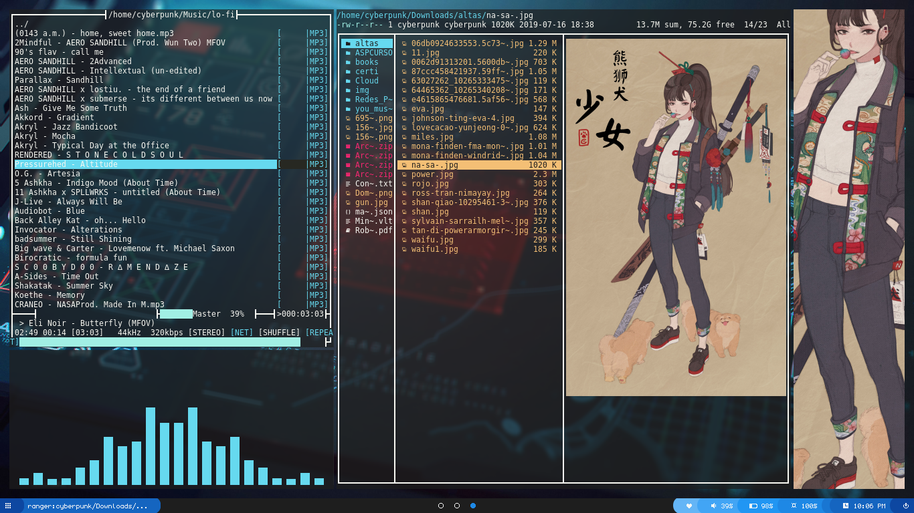
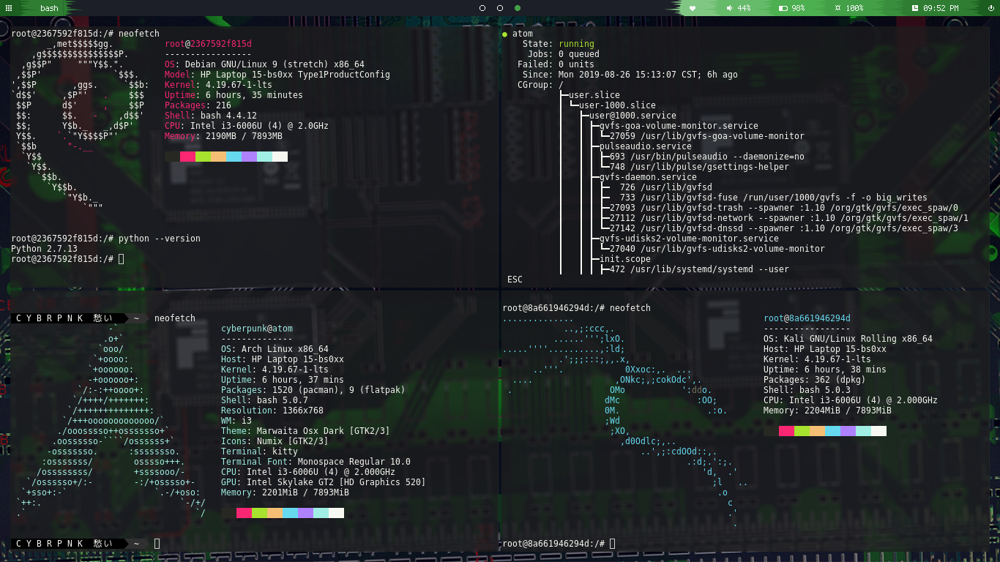

¿Porque linux?
Cuando se empieza a trabajar con gestores de paquetes como puede ser npm o composer
que se trabajan comunmente desde la terminal resulta ser muy practico, trabajar desde
una terminal de linux ya que basado en mi experincia las configuraciones suelen ser
mas accesibles al momento de agregar o quitar modulos, ya sea sobre el mismo sistema
operativo para que nuestras aplicaciones finalmente corrar o ya sea
una aplicacion o componente en la que querramos echar mano, por eso recomiendo
en gran manera que si se es desarollador, linux es una magnifica opcion ya que, te abre
un mundo de posibilidades en la que a base de código tu puedes hacer que tu ordenador haga
lo que tu desees en el orden y de la manera en que tu lo diseñes.
Personalización y Adminstrador de ventanas
Muchas veces cuando buscamos una distribucion de linux lo hacemos en base a
a su aspecto, pero si tu eres nuevo en esto debes saber que "El entorno de
escritorio o su apariencia por defecto no es la distribucion." Citando a Luke Smith
en su video How to choose a Linux distro: Stop Thinking!.
Entonces debes saber que si tu estas en debian puedes utilizar GNOME, KDE o Kfce
como entorno de escritorio y eso es lo asombroso de linux que puedes personalizar tu sistema operativo a la medida
de tus necesidades.
Mi configuracion de ArchLinux
Cuando me encontraba realizando alguna tarea en windows generalmente sentia que demoraba mucho
tiempo en cambiar de ventana por ejemplo, Odiaba el molesto ALT+TAB para buscar una ventana en especifico.
Pero al experimentar un poco con linux me encontre con i3WM
el cual es un gestor de ventanas que vaya que si es hermoso, entre todas sus caracteristicas destáco las siguientes:
-
Cada vez que abres una ventana esta se coloca automaticamente segun el espacio de la
pantalla de manera ordenada de forma vertica u horizontal.
-
Permite la navegación entre ventanas por medio de VIM.
-
Permite la agrupacion de ventanas.
-
No consume nada de recurosos aunque trabaje con espacios de trabajo.
-
Es sumamente personalizable.

Productividad y Vim
Vim a simple vista es un editor de texto desde la terminal que por medio de convinaciones de teclas
permite manipular un documento de texto, pero eso no es todo, vim es una forma de automatizar las cosas.
yo utilizo vim como ya leiste anteriormente para moverme entre ventanas, tambien lo utilizo dentro
de mi navegador Qutebrowser, en mi explorador de archivos Ranger y en muchas otras situaciones en las que tendrias que perder muchos segundos
en mover el raton (se que suena exagerado pero..) con vim puedes hacer estas operaciones mucho mas rapido y eficientemente.

Visual Studio Code
Si quieres empezar con vim y familiarizarte te recomiendo probar la extension de vim para Visual Studio Code es una maravilla y
tambien la suelo utilizar en proyectos mas extensos.

Dotfiles
Puedes encontrar mi configuracion en el siguente enlace:
https://github.com/amenpunk/Dotfiles
Entre algunas aplicaciones geniales y paquetes que suelo utilizar estan los siguientes:
-
Polybar
-
Dunst
-
FlashFocus
-
Kitty Terminal
-
Compton
-
Player-Moc
-
Rofi
-
Sxhkd
-
Mupdf
-
feh image viewer
